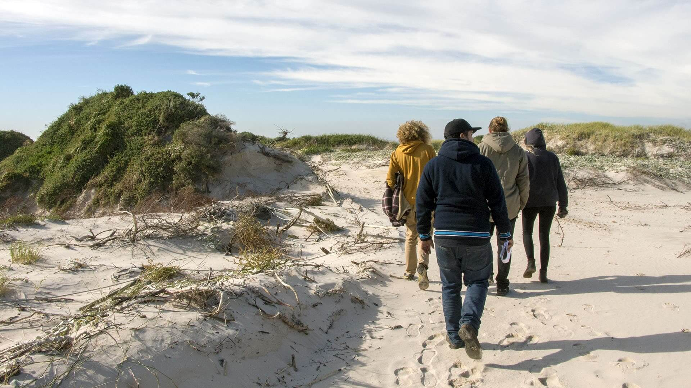
Crew scout
We had to do another scout on the day of the beach shoot, in
order to figure out the best course for logistics.
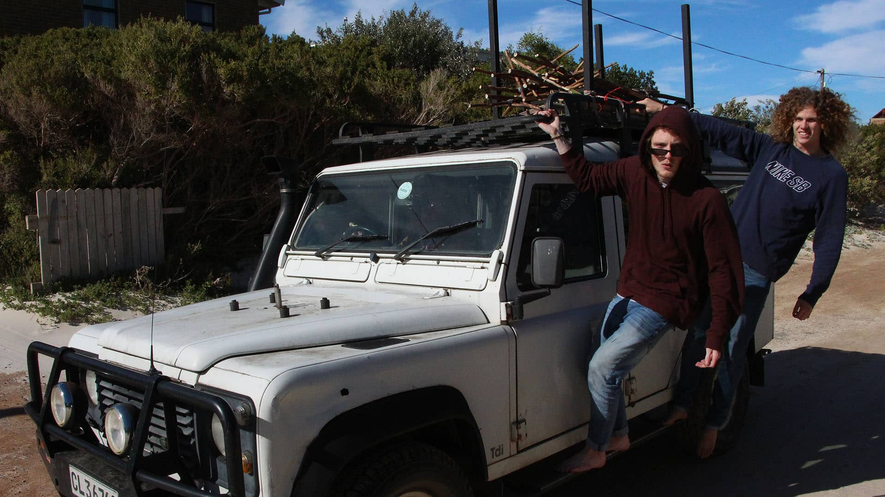
Troop carrier
My trusty Land Rover helped ferry anything and everything, from
people and props to generators and gear. An indispensible part of the production.
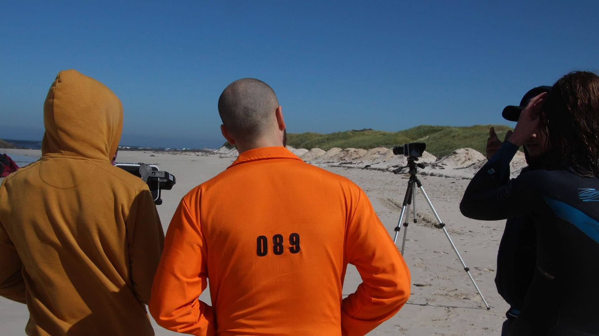
Step by step
Lee and I went to great lengths to make sure that the cast and
the rest of the crew understood what we wanted to achieve from the shot list. Much of
this was done during setup of shoots, so as to not waste valuable time.
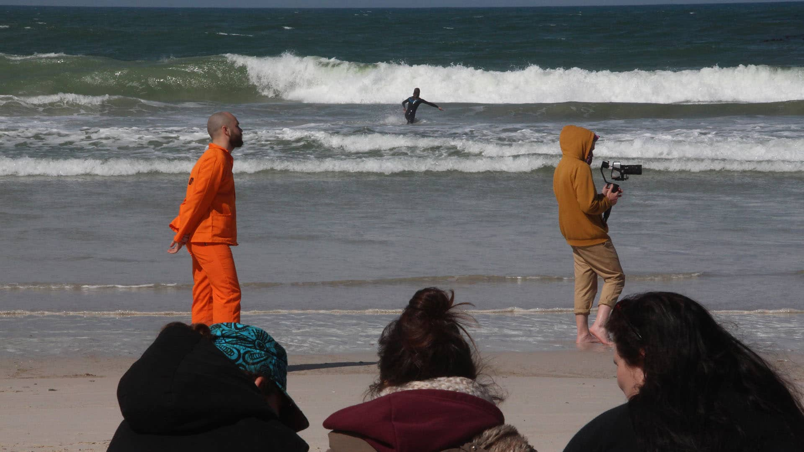
Foreground, middleground & background
This image very accurately captures the essence of the shhoting
in genreal. I was always out shooting and working with the actors, trying to get the
shots. Nick in the background, is suited up to brave the cold water, and get some
B-roll in the ocean. In the foreground is part of the production crew, sitting out the
wind and weather, looking on.
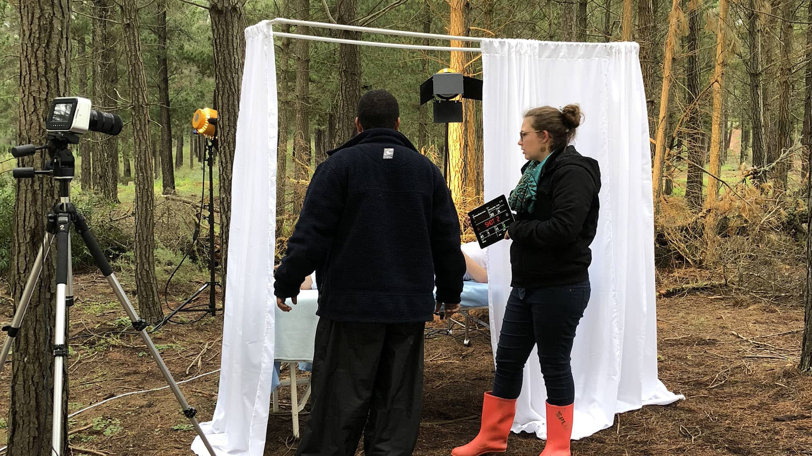
Lights, camera and no action
The forest required careful lighting and setup of the props, in
order to match the shots we needed. Here Lee and Katie Blackmore, one of our lighting
crew, are discussing the best course of action to shoot the hospital bed.
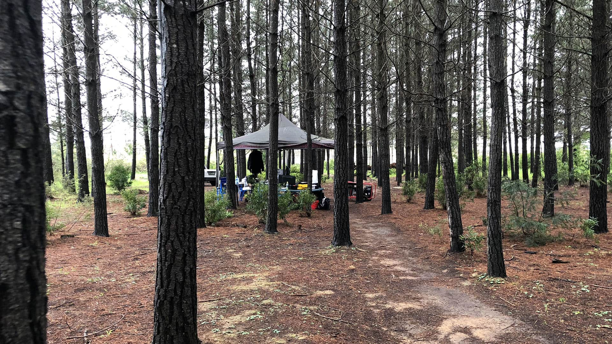
Basecamp
The gazebo provided refuge for the crew that were on set, but
not actively involved with the shooting process. It was a safe haven when you needed to
switch gear, or stock up on drinks and snacks.
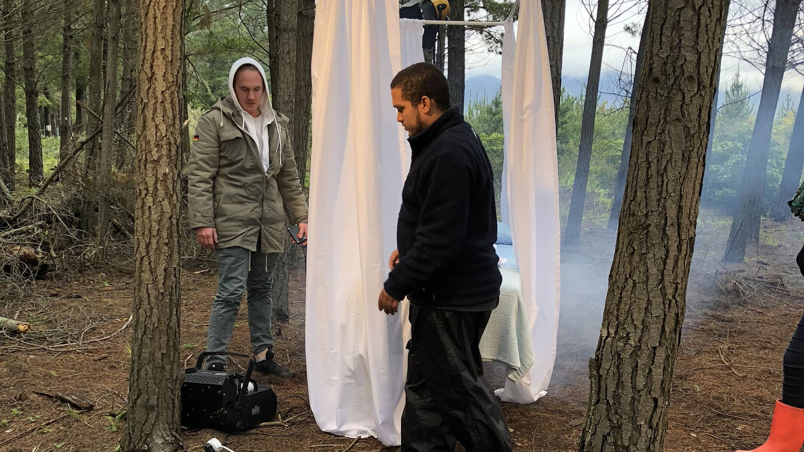
Up in smoke
We were fortunate enough to be sponsored a smoke machine, but
ultimately did not make use of it, as it did not fit the look that I was seeking for
this scene. Nonetheless, it provided some much-needed entertainment and just made
things generally look cooler.
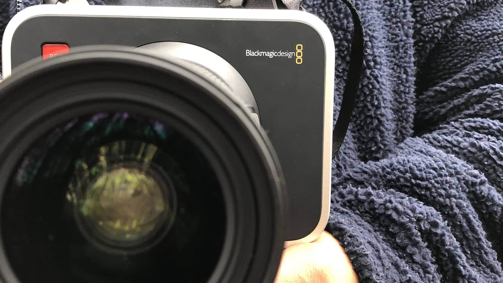
Voodoo and Blackmagic
One of the two Blackmagic bodies that we had to shoot on. They
were great to use, and delivered fantastic footage. Their bulk and unwieldy size were
compensated by their host of features which really made this productoin.
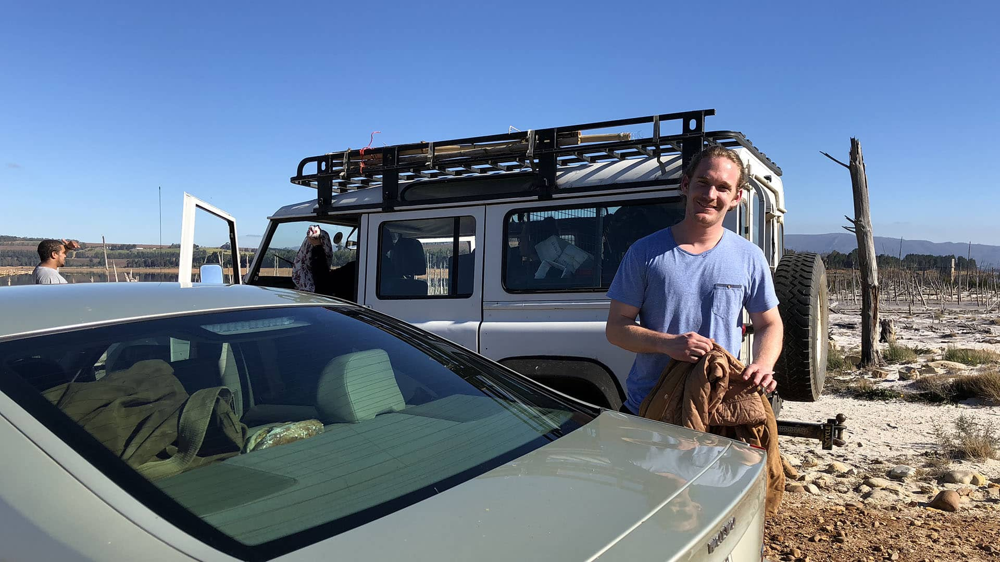
You need it, he's got it
Justin the key grip was one of the most essential crew members,
and he's the one that could. He managed the logistics like a pro, and made sure that
everything was where it needed to be, when it was needed. the final film owes a look to
this happy face.
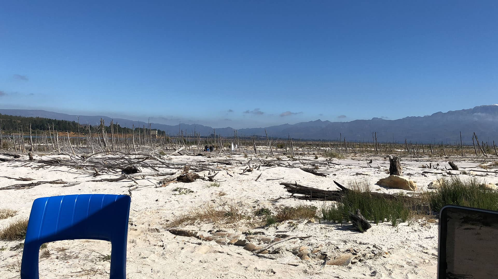
Hopeful desolation
We were able to find beauty in this bleak landscape, and pull
off some of my favorite shots in the film. When I saw this location, I knew immediately
that I wanted to put it in the film.
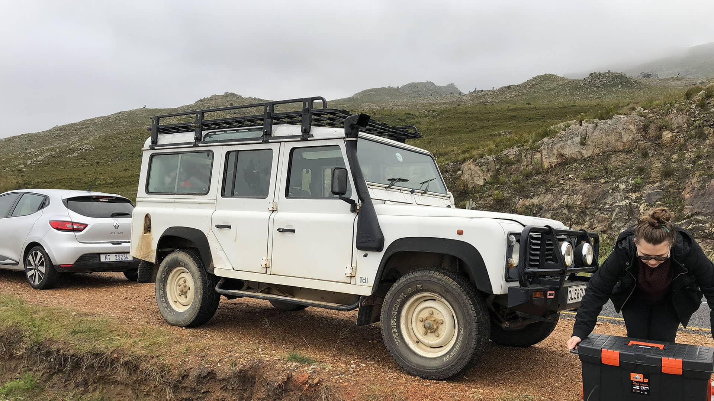
Landy o' sweet Landy
I cannot stress enough how much the Landy helped transport
things in the making of this film. I don't want to float my own goat, but we really
loaded her up on every shoot day, and kept powering through it all. Katie is also seen
here offloading some precious cargo.